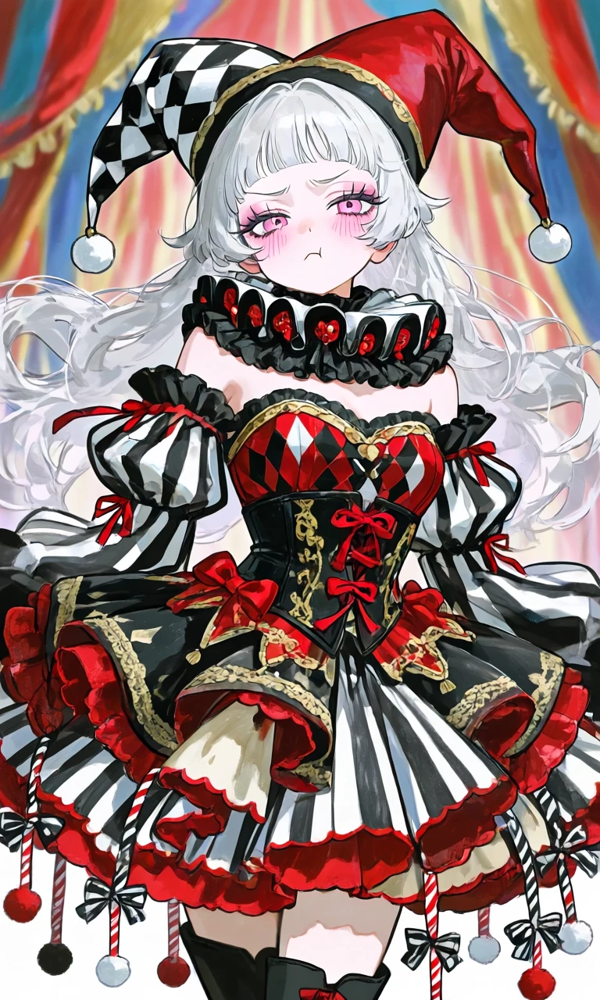
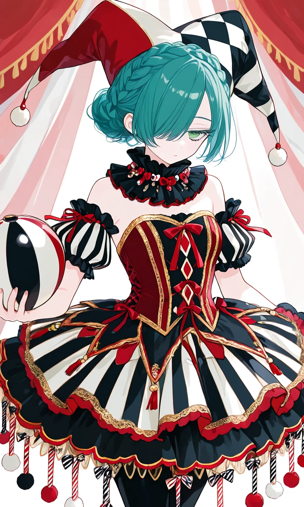

The Jester’s Gambit

Outfit Prompt
She is wearing:
Jester hat: A tall, multi-pointed jester cap in red, black, and white. It features a harlequin diamond/checkerboard pattern, black-and-white stripes on some points, and dangling elements: small red and white pom-poms or bells at the tips. The hat sits atop a structured base rather than directly on the head.
Neck piece / Ruff collar: a small detachable black ruffled neck piece (a dramatic, layered lace or fabric ruff). This creates a stacked, elongated silhouette The ruff is edged in red and adorned with small bows or beads, giving a Elizabethan-jester hybrid feel.
Corset bodice: A heavily boned, structured corset in deep red with black overlay. The front features intricate harlequin diamond patterns in red/black/white, gold piping or embroidery, and multiple layered red ribbons/bows. It laces up the back for a classic Lolita waist-cinching effect.
Sleeves: Off-the-shoulder or puffed short sleeves with black-and-white striped or checkered details, finished with red ribbon ties and small ruffles. The shoulders have additional ruffled black fabric for volume.
Overall top silhouette: Very ornate and layered, with gold trim outlining the diamonds and edges, plus dangling red ribbons or tassels from the shoulders and waist.
High-volume, tiered skirt: A short-to-mid length bell or A-line shape with extreme fluff (supported by a petticoat).
The top layer uses black fabric with red and gold trim.
Lower tiers incorporate black-and-white vertical stripes, red scalloped edges, and asymmetrical ruffles.
The hem is highly decorative: it has a scalloped or pointed edge with many dangling elements hanging down — red and white striped striped poles, black-and-white striped ribbons, red bows, and white or red pom-poms at the ends. These create constant movement and a playful-yet-macabre effect.
Additional details of outfit: Gold lace or braid trim throughout, more red bows at the waist and hips, and layered underskirts in black and cream for depth.
She is wearing black boots.
Outfit Examples



